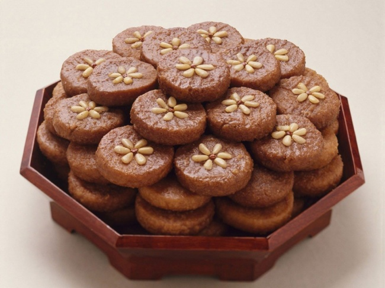
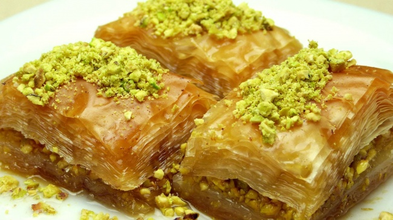

Этими пряными пончиками любят лакомиться многие в Южной Америке, но именно в Перу они приобрели статус мегапопулярного десерта. Готовят их из тыквы или сладкого картофеля, а подают с медом или сиропом из тростникового сахара и цитрусовых.
Чуррос, Испания
Самый любимый у испанцев десерт представляет собой простые палочки из заварного теста, обжаренные во фритюре. Едят их, обмакивая в горячий шоколад.
Вагаси, Япония
Блюдо из бобовых, риса, каштанов, различных трав и чая. И хотя в Японии вагаси считаются национальным десертом, на вкус они совсем не сладкие.
Печенье Хангва, Корея
Традиционное корейское угощение с зерном, медом, съедобными цветами и кореньями.

Пахлава, Турция
Пахлава — это визитная карточка Востока. Готовят ее из слоеного теста. Каждый слой десерта промазывают маслом и медом, а также присыпают орехами.

5 малоизвестных фактов о шоколаде
В шоколадных изделиях мало настоящего шоколада
По стандартам США, в молочном шоколаде должно содержаться всего лишь около десяти процентов тёртого какао, в то время как в полусладком шоколаде, содержание тёртого какао должно быть не менее тридцати пяти процентов. Молочный шоколад, который
изготавливается по немного другим правилам, должен содержать не менее двадцати процентов какао-масла.
Молочный шоколад изобрели совсем недавно
Первое европейское изобретение в сфере шоколада случилось в 18 веке и состояло в удалении около половины какао-масла. Оставшаяся часть дробилась и смешивалась с солями, чтобы смягчить горький вкус. Этот шоколад стал известен как голландский какао
(Dutch Cocoa). Молочный шоколад был открыт путём смешивания какао порошка с подслащённым сгущённым молоком. Этот рецепт был изобретён человеком по фамилии Nestle.
Шоколад содержит лекарство под названием теобромин
Теобромин похож на кофеин, но он оказывает более мягкий стимулирующий эффект. Предварительные исследования показали, что он также может быть использован в препаратах для подавления кашля. Хотя теобромин давно использовался в лечении проблем с
давлением и тестировался для использования в борьбе с раком, его можно употреблять только в умеренных количествах. Высокий уровень теобромина может вызвать отравление, хотя животные и пожилые люди в большей степени подвержены этому риску. Здоровый
человек должен будет съесть очень много шоколада для того, чтобы его здоровье оказалось в опасности.
В мире нехватка шоколада
Мир столкнулся с нехваткой шоколада в связи с серьёзными заболеваниями, которые влияют на деревья в Латинской Америке, где производится большая часть какао в мире. Помимо этого, спрос на шоколад постоянно растёт, что делает обеспечение людского
спроса на шоколад невероятно трудной задачей. К счастью, заболевания, которые влияют на производство шоколада, не распространились на Африку. Тем не менее, эти нехватки могут привести к росту розничных цен на шоколад, если фермеры не смогут
справиться с заболеваниями. Хотя деревья в Африке не страдают от болезней, там недавно были засухи, что ещё больше усложняет ситуацию.
Какао выращивают рабы
К сожалению, сластён придётся огорчить и заставить почувствовать себя виноватыми. Вы когда-нибудь задумывались над тем, откуда берётся шоколад? Большинство шоколада получают благодаря детскому труду. По подсчётам, только в Африке на шоколадных
фермах работает примерно 56–72 миллионов детей. Часто этих детей завлекают на работу на фермах обманным путём, а в некоторых случаях просто продают в рабство и им приходится до конца своих дней работать на этих фермах, и служить источником обогащения
других. Дети, которым повезло немного больше, живут на бананах и кукурузной каше. Ну а тех, кому удача не улыбнулась, часто порют как животных.
Один из таких детей рассказывал, что ему сказали, что он будет зарабатывать деньги и таким образом сможет помочь своей семье, однако единственным вознаграждением, на которое он может сейчас рассчитывать, это день без избиений цепью от велосипеда
или веткой дерева какао. Этот ребёнок никогда не пробовал тот продукт питания, за производством которого он проводит свою жизнь. Некоторые предлагают покупать только те продукты, которые маркированы организацией «Справедливая торговля» (Fair
Trade), однако усилия этой организации несоизмеримо малы, если их вообще можно заметить.
История макаронc
История гласит, что макарон, несмотря на неимоверную популярность у французов, был впервые создан примерно в 1533 году в Италии шеф-поваром Екатерины Медичи, слывшей большой сластёной. Позднее, став женой французского короля, она перевезла свою
маленькую «итальянскую» слабость во Францию.
Независимо от того, кто первым изобрёл эти печенья, во Франции они начали распространяться к концу 18 века благодаря двум бенедиктинским монахиням, которые пекли и продавали их исключительно с целью заработка на собственное пропитание. Воспользовавшись
растущим спросом на макарон, вслед за монахинями их начали массово продавать и уличные парижские торговцы.
Современный же облик макарон приобрели только в начале 20-го века, когда Пьера Дефонтейна, внука основателя известнейшей кондитерской Ladurée, посетила кулинарная муза, и он соединил два печенья в одно с помощью крема ганаш. Печенье трансформировалось
в пирожное, получившее название ‘le macaron parisien’ (парижский макарон). Это лакомство сразу же стало «бестселлером» кондитерской сети Ladurée.
Как приготовить трюфели в домашних условиях
Трюфели – одни из самых известных конфет в мире. Их родина – Франция, а свое название они получили по внешнему сходству с грибом элитного сорта – трюфелем. Первоначально это лакомство имело форму неровных шариков, а привычную нам куполообразную
форму приобрело позднее. Эти конфеты легко приготовить дома – домашние трюфели ничуть не хуже, а может, даже лучше магазинных.
Рецепт трюфелей насчитывает десятки вариантов. Классические трюфели готовятся из шоколада, сливочного масла и сливок, затем обмакиваются в расплавленный темный шоколад и обваливаются в какао. На сегодняшний день основа приготовления этих конфет
мало чем отличается от традиционной.
Но начинкой может быть что угодно – миндаль, грецкий орех, чернослив, курага, имбирь, фрукты, кукурузные хлопья. Отличаются и варианты посыпки – кроме какао можно использовать вафельную крошку, кокосовую стружку, сахарную пудру. Встречаются даже
трюфели, обсыпанные со всех сторон перцем, паприкой и другими острыми приправами – они наверняка придутся по вкусу любителям острых ощущений.